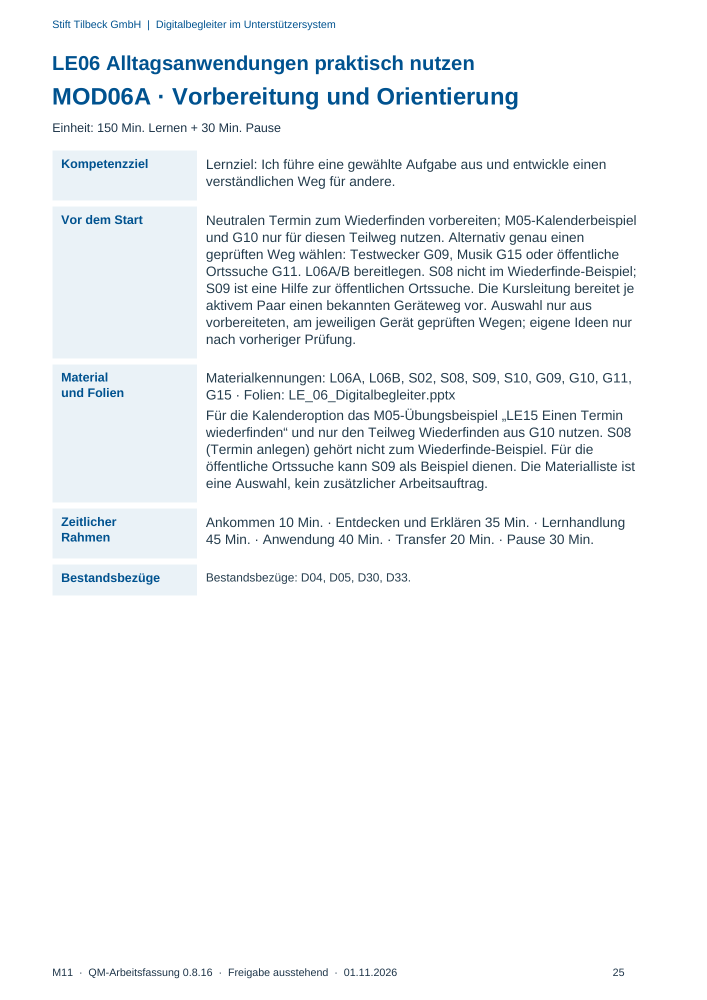
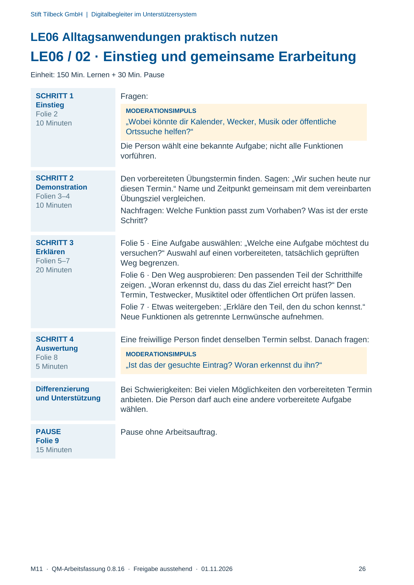
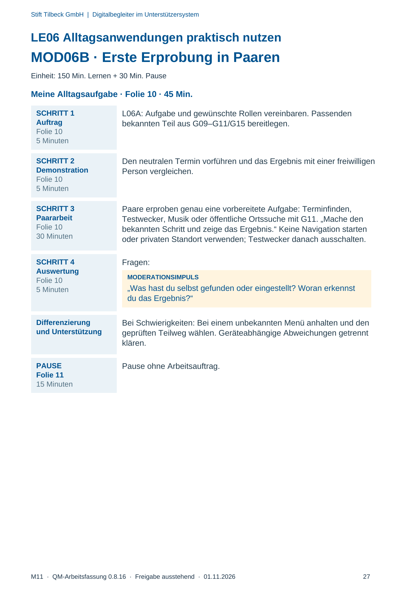
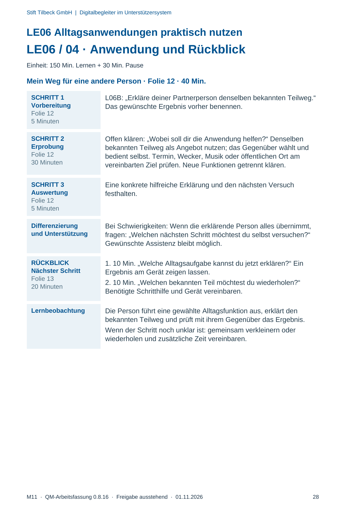

M11 · Originalseite 25, 26, 27, 28
Durchführungshilfe
Gezielte Original-Druckauswahl.
Fragen und Ankreuzfelder werden auf dem Ausdruck bearbeitet. Die Lesefassung speichert keine Antworten.
Lesefassung · Seite 25
Stift Tilbeck GmbH | Digitalbegleiter im Unterstützersystem
LE06 Alltagsanwendungen praktisch nutzen
MOD06A · Vorbereitung und Orientierung
Einheit: 150 Min. Lernen + 30 Min. Pause
Kompetenzziel Lernziel: Ich führe eine gewählte Aufgabe aus und entwickle einen
verständlichen Weg für andere.
Vor dem Start Neutralen Termin zum Wiederfinden vorbereiten; M05-Kalenderbeispiel
und G10 nur für diesen Teilweg nutzen. Alternativ genau einen
geprüften Weg wählen: Testwecker G09, Musik G15 oder öffentliche
Ortssuche G11. L06A/B bereitlegen. S08 nicht im Wiederfinde-Beispiel;
S09 ist eine Hilfe zur öffentlichen Ortssuche. Die Kursleitung bereitet je
aktivem Paar einen bekannten Geräteweg vor. Auswahl nur aus
vorbereiteten, am jeweiligen Gerät geprüften Wegen; eigene Ideen nur
nach vorheriger Prüfung.
Material
und Folien
Materialkennungen: L06A, L06B, S02, S08, S09, S10, G09, G10, G11,
G15 · Folien: LE_06_Digitalbegleiter.pptx
Für die Kalenderoption das M05-Übungsbeispiel „LE15 Einen Termin
wiederfinden“ und nur den Teilweg Wiederfinden aus G10 nutzen. S08
(Termin anlegen) gehört nicht zum Wiederfinde-Beispiel. Für die
öffentliche Ortssuche kann S09 als Beispiel dienen. Die Materialliste ist
eine Auswahl, kein zusätzlicher Arbeitsauftrag.
Zeitlicher
Rahmen
Ankommen 10 Min. · Entdecken und Erklären 35 Min. · Lernhandlung
45 Min. · Anwendung 40 Min. · Transfer 20 Min. · Pause 30 Min.
Bestandsbezüge Bestandsbezüge: D04, D05, D30, D33.
Originalseite ansehen

Lesefassung · Seite 26
Stift Tilbeck GmbH | Digitalbegleiter im Unterstützersystem
LE06 Alltagsanwendungen praktisch nutzen
LE06 / 02 · Einstieg und gemeinsame Erarbeitung
Einheit: 150 Min. Lernen + 30 Min. Pause
SCHRITT 1
Einstieg
Folie 2
10 Minuten
Fragen:
MODERATIONSIMPULS
„Wobei könnte dir Kalender, Wecker, Musik oder öffentliche
Ortssuche helfen?“
Die Person wählt eine bekannte Aufgabe; nicht alle Funktionen
vorführen.
SCHRITT 2
Demonstration
Folien 3–4
10 Minuten
Den vorbereiteten Übungstermin finden. Sagen: „Wir suchen heute nur
diesen Termin.“ Name und Zeitpunkt gemeinsam mit dem vereinbarten
Übungsziel vergleichen.
Nachfragen: Welche Funktion passt zum Vorhaben? Was ist der erste
Schritt?
SCHRITT 3
Erklären
Folien 5–7
20 Minuten
Folie 5 · Eine Aufgabe auswählen: „Welche eine Aufgabe möchtest du
versuchen?“ Auswahl auf einen vorbereiteten, tatsächlich geprüften
Weg begrenzen.
Folie 6 · Den Weg ausprobieren: Den passenden Teil der Schritthilfe
zeigen. „Woran erkennst du, dass du das Ziel erreicht hast?“ Den
Termin, Testwecker, Musiktitel oder öffentlichen Ort prüfen lassen.
Folie 7 · Etwas weitergeben: „Erkläre den Teil, den du schon kennst.“
Neue Funktionen als getrennte Lernwünsche aufnehmen.
SCHRITT 4
Auswertung
Folie 8
5 Minuten
Eine freiwillige Person findet denselben Termin selbst. Danach fragen:
MODERATIONSIMPULS
„Ist das der gesuchte Eintrag? Woran erkennst du ihn?“
Differenzierung
und Unterstützung
Bei Schwierigkeiten: Bei vielen Möglichkeiten den vorbereiteten Termin
anbieten. Die Person darf auch eine andere vorbereitete Aufgabe
wählen.
PAUSE
Folie 9
15 Minuten
Pause ohne Arbeitsauftrag.
Originalseite ansehen

Lesefassung · Seite 27
Stift Tilbeck GmbH | Digitalbegleiter im Unterstützersystem
LE06 Alltagsanwendungen praktisch nutzen
MOD06B · Erste Erprobung in Paaren
Einheit: 150 Min. Lernen + 30 Min. Pause
Meine Alltagsaufgabe · Folie 10 · 45 Min.
SCHRITT 1
Auftrag
Folie 10
5 Minuten
L06A: Aufgabe und gewünschte Rollen vereinbaren. Passenden
bekannten Teil aus G09–G11/G15 bereitlegen.
SCHRITT 2
Demonstration
Folie 10
5 Minuten
Den neutralen Termin vorführen und das Ergebnis mit einer freiwilligen
Person vergleichen.
SCHRITT 3
Paararbeit
Folie 10
30 Minuten
Paare erproben genau eine vorbereitete Aufgabe: Terminfinden,
Testwecker, Musik oder öffentliche Ortssuche mit G11. „Mache den
bekannten Schritt und zeige das Ergebnis.“ Keine Navigation starten
oder privaten Standort verwenden; Testwecker danach ausschalten.
SCHRITT 4
Auswertung
Folie 10
5 Minuten
Fragen:
MODERATIONSIMPULS
„Was hast du selbst gefunden oder eingestellt? Woran erkennst
du das Ergebnis?“
Differenzierung
und Unterstützung
Bei Schwierigkeiten: Bei einem unbekannten Menü anhalten und den
geprüften Teilweg wählen. Geräteabhängige Abweichungen getrennt
klären.
PAUSE
Folie 11
15 Minuten
Pause ohne Arbeitsauftrag.
Originalseite ansehen

Lesefassung · Seite 28
Stift Tilbeck GmbH | Digitalbegleiter im Unterstützersystem
LE06 Alltagsanwendungen praktisch nutzen
LE06 / 04 · Anwendung und Rückblick
Einheit: 150 Min. Lernen + 30 Min. Pause
Mein Weg für eine andere Person · Folie 12 · 40 Min.
SCHRITT 1
Vorbereitung
Folie 12
5 Minuten
L06B: „Erkläre deiner Partnerperson denselben bekannten Teilweg.“
Das gewünschte Ergebnis vorher benennen.
SCHRITT 2
Erprobung
Folie 12
30 Minuten
Offen klären: „Wobei soll dir die Anwendung helfen?“ Denselben
bekannten Teilweg als Angebot nutzen; das Gegenüber wählt und
bedient selbst. Termin, Wecker, Musik oder öffentlichen Ort am
vereinbarten Ziel prüfen. Neue Funktionen getrennt klären.
SCHRITT 3
Auswertung
Folie 12
5 Minuten
Eine konkrete hilfreiche Erklärung und den nächsten Versuch
festhalten.
Differenzierung
und Unterstützung
Bei Schwierigkeiten: Wenn die erklärende Person alles übernimmt,
fragen: „Welchen nächsten Schritt möchtest du selbst versuchen?“
Gewünschte Assistenz bleibt möglich.
RÜCKBLICK
Nächster Schritt
Folie 13
20 Minuten
1. 10 Min. „Welche Alltagsaufgabe kannst du jetzt erklären?“ Ein
Ergebnis am Gerät zeigen lassen.
2. 10 Min. „Welchen bekannten Teil möchtest du wiederholen?“
Benötigte Schritthilfe und Gerät vereinbaren.
Lernbeobachtung Die Person führt eine gewählte Alltagsfunktion aus, erklärt den
bekannten Teilweg und prüft mit ihrem Gegenüber das Ergebnis.
Wenn der Schritt noch unklar ist: gemeinsam verkleinern oder
wiederholen und zusätzliche Zeit vereinbaren.
Originalseite ansehen
